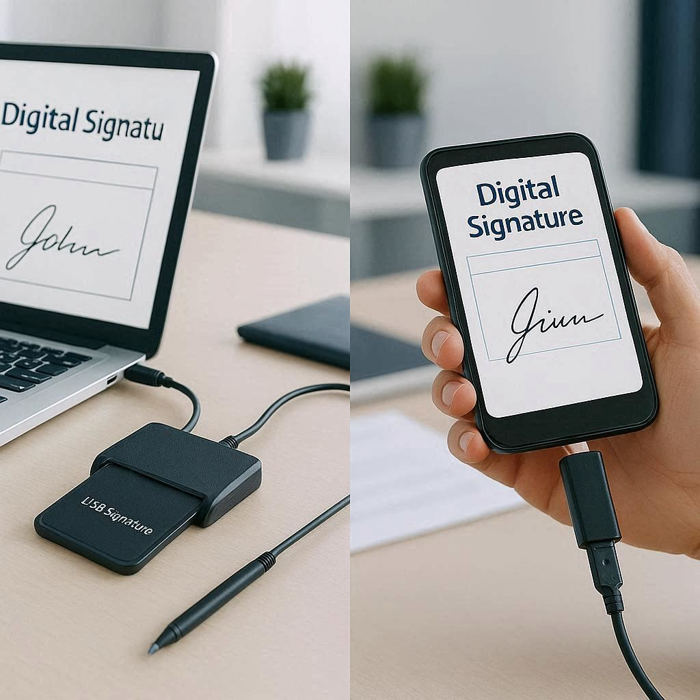

E-İmza ve Mobil İmza Nedir?
E-İmza (Elektronik İmza): Akıllı kart ve kart okuyucu ile bilgisayar üzerinden kullanılan, BTK yetkili ESHS firmaları tarafından üretilen nitelikli elektronik sertifikadır.
Mobil İmza: GSM operatörleri (Turkcell, Vodafone, Türk Telekom) tarafından sunulan, SIM kart üzerinde saklanan sertifika ile cep telefonundan kullanılan elektronik imza yöntemidir.
Her ikisi de 5070 sayılı Elektronik İmza Kanunu kapsamında yasal geçerliliğe sahiptir.
Karşılaştırma Tablosu
| Özellik | E-İmza (Kart) | Mobil İmza |
|---|---|---|
| Kullanım aracı | Kart + okuyucu + bilgisayar | Cep telefonu (SIM kart) |
| Taşınabilirlik | Orta (okuyucu gerekir) | Yüksek (telefon yeter) |
| Güvenlik seviyesi | Çok yüksek | Yüksek |
| Uygulama uyumluluğu | Tüm uygulamalar | Sınırlı (bazı uygulamalar desteklemez) |
| EKAP / İhale | Destekler | Desteklemez |
| Toplu imzalama | Mümkün | Mümkün değil |
| Operatör bağımlılığı | Yok | Var (GSM operatörüne bağlı) |
| Fiyat | 2.899 - 3.750 TL (1-3 yıl) | Aylık ~50-100 TL |
E-İmza Ne Zaman Tercih Edilmeli?
- EKAP üzerinden ihale süreçlerine katılacaksanız (mobil imza EKAP'ta çalışmaz)
- Toplu belge imzalama ihtiyacınız varsa
- Tüm kamu uygulamalarıyla tam uyumluluk istiyorsanız
- Uzun vadede maliyet avantajı arıyorsanız (3 yıllık paket = aylık ~128 TL)
- HSM ve kurumsal entegrasyon planlıyorsanız
Mobil İmza Ne Zaman Tercih Edilmeli?
- Sık seyahat ediyorsanız ve bilgisayar taşımak istemiyorsanız
- Sadece e-Devlet ve basit işlemler için kullanacaksanız
- Kısa süreli, geçici bir ihtiyacınız varsa
Sonuç
Profesyonel ve kurumsal kullanıcılar için e-imza açık ara daha avantajlıdır. Tüm uygulamalarla uyumlu, daha güvenli ve uzun vadede daha ekonomiktir. Mobil imza ise bireysel ve hafif kullanım senaryolarında pratik bir alternatiftir.
Hangisini seçeceğinizden emin değil misiniz? Kullanım senaryonuza göre size en uygun çözümü birlikte belirleyelim. WhatsApp'tan yazmanız yeterli.